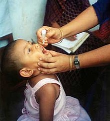

Pakistan estimated population (excluding the disputed areas of Azad Kshmir and Gilgit-Baltistan)was 207,774,520 according to the provisional result of the 2017 Census of pakistan.[1][2][3] pakistan is the world's fifth-most-populous country.
The population is ypung: in 2019 34.8% were thought tobe 14 or younger,though in 1990 this had
been much higher
at 437%
[4] in 2010 the figure for those aged 24 or less was 62.19%.[5]
Many young pakistanis are affected by serious issues arround education in pakistan;only 68%of
pakistani children finish primary
schooleducation[6]
and pakistan has one of the lowest literacy rates in the eorld.[7]Other areas with significant
issues includes: child marriage in
pakistan,
child labour in pakistan,street children,malnutrition, and health
problems unemployment poses an escalting concern in pakistan. Wit a ppulation exceeding 220million and a
workforce of approximately 65millions ,the country faces challenges in offering an adequate number of jobs
opportunities for its citizens.The issue is particularly acute for the youth, who consitituten roughly 60%of the
ppulation ang confront an unemployment ratevof approximately 10%.[8]
Artical 25-Aof the constitution of pakistan obligates the stae to provide free and compulsory quality education to children of the age of 5 to 16 years. pakistan has one of the lowest litracy rates in the world [7]and the second out of school population (22.8million children) [10] after Nigeria. only 68%of pakistani children finish primary school education. [11]
The practice of child marriageis prevalent in pakistan with the highest prevalence in sindh province.It dispropertionately affects the girl child.
Child labour in pakistan is the employment of children for work in pakistan, which causes them mental, physical, moral, and social harm. The Human Right Commission of Pakistan estimated that in the 1990s, 11 million children were working in the country, half of whom were under age ten. In 1996, the median age for a child entering the work force was seven, down from eight in 1994. It was estimated that one quarter of the country's work force was made up of children.
Malnutritionis one of the most significant public health problems in Pakistan, and especially among children. According to UNICEF,about half of children are chronically malnourished.[31]
Pakistan is one of the two remaining countries[37][38] in the world where poliomyelitis (polio) is still categorized as an endemic viral infection,[39] the other one being Afghanistan.[37] As of 20 July 2020, there have been 60 documented cases in Pakistan in 2020, and 146 documented cases in Pakistan in 2019.[40][41] The total count of wild poliovirus cases in Pakistan in 2018 was 12.[42] By 1991, only 83 percent of Pakistani children had been vaccinated.[43] Research by the Center for Disease Control (CDC) in April 1998 cited a failure to vaccinate, vaccine failure, and inadequate immunization strategies as causes for the continued incidences[spelling?] of polio in this time.[44] Reasons for under-vaccination included the population being uninformed, considering vaccination unimportant, and having to travel long distances to vaccination sites.[44] 